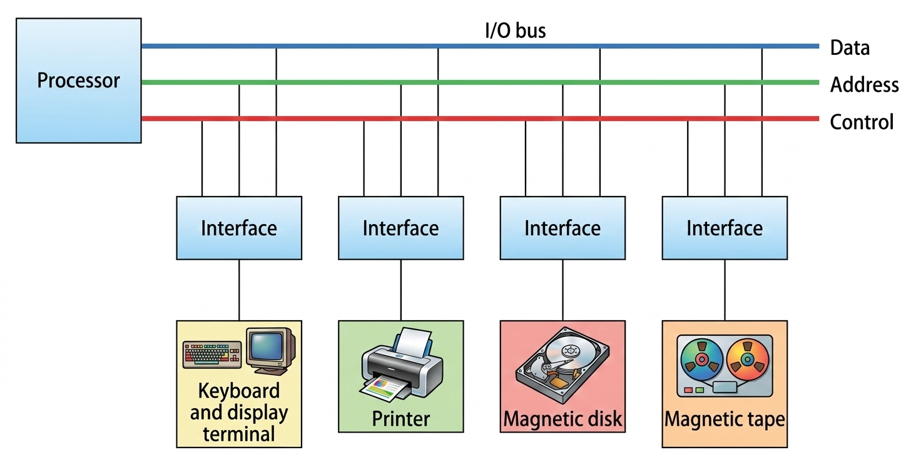

This architecture defines how various I/O devices connect to the core computer system.

🔌 Key Component
- Address Decoder: Enables the interface to recognize when the processor is specifically addressing it.
- Buffer Register: A temporary storage area that holds data being moved between the high-speed bus and the (usually) slower peripheral.
- Status Register: A register used to store "bits" that represent the current state of the device, which the processor monitors to decide when to send or receive data.
🔌 Key Command
- I/O Command: function code sent by the processor to an interface that instructs the interface and its connected peripheral device to perform a specific operation, where the meaning of the command depends on the particular peripheral being addressed.
- Control Command: Used to activate a peripheral and give it specific operational instructions (e.g., "rewind" or "start moving")
- Status Command: Used to check the condition of the peripheral or interface by reading bits in a status register to determine readiness or detect errors such as a busy device or transfer failure.
- Data Output Command: Triggers the interface to take data from the bus and place it into its internal buffer register, eventually sending it to the peripheral.
- Data Input Command: Interface receives data from the peripheral, places it in the buffer register, and then puts it onto the data lines for the processor to read.
CPU Communication
Device Management
Data Transfer